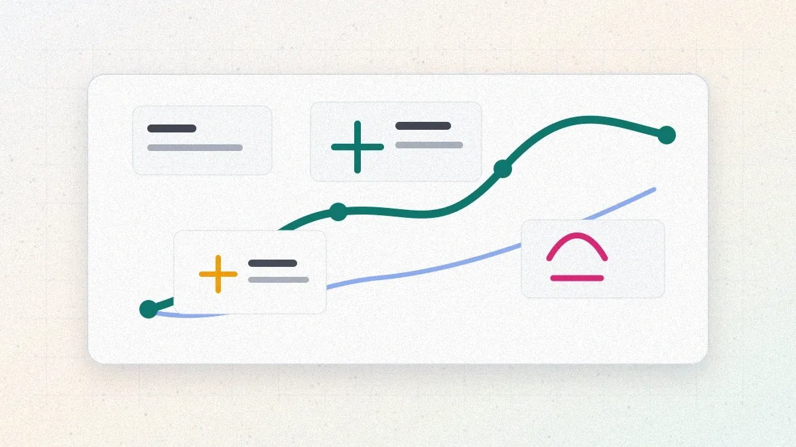
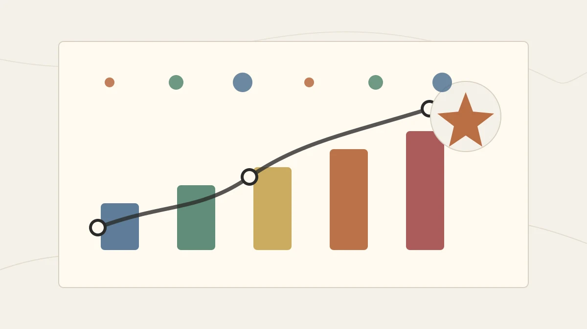

Гайд · ИИ-агенты
ИИ для продаж: агенты, сценарии и расчёт окупаемости
ИИ для продаж работает лучше всего на повторяемых операциях вокруг сделки: квалификации лидов, follow-up, сводках звонков, гигиене CRM и подготовке КП. Разбираем, где нужен агент, как считать окупаемость и когда автоматизацию лучше отложить.
Автор · проверено 17 июня 2026 г.

Содержание
Краткое резюме
По оценке McKinsey за 2025 год, технологии генеративного ИИ способны добавить от 0,8 до 1,2 трлн долларов ежегодной ценности именно в функциях маркетинга и продаж — больше, чем в любой другой бизнес-функции. При этом исследование Salesforce показывает, что менеджеры по продажам тратят на саму продажу меньше 30% рабочего времени; остальное уходит на занесение данных в CRM, поиск информации и рутинные письма. Поэтому практичный вопрос звучит шире, чем «нужен ли ИИ-агент»: где ИИ для продаж действительно снимает рутину, а где он начнёт мешать менеджеру.
Главный рабочий формат сегодня — ИИ-агент в продажах: программа на основе языковой модели, которая получает цель (например, «квалифицировать входящую заявку и назначить следующий шаг»), сама планирует действия, обращается к CRM, почте и базе знаний и доводит задачу до результата. От сценарного бота он отличается тем, что работает со свободным текстом и нестрогими ситуациями; от живого менеджера — тем, что не устаёт на рутине и одинаково отрабатывает каждый лид.
| Свойство | Менеджер | Сценарный бот | ИИ-агент |
|---|---|---|---|
| Вход | любой | кнопки и заданные фразы | свободный текст, письма, расшифровки звонков |
| Рутина (CRM, follow-up) | устаёт, забывает | не умеет | выполняет стабильно |
| Сложный торг и отношения | силён | нет | слаб, нужен человек |
| Масштаб без найма | ограничен | высокий | высокий |
| Цена ошибки | контролирует сам | низкая | требует рамок и проверки |
Главная мысль: ИИ-агент в продажах окупается на повторяемых операциях вокруг сделки — квалификации, follow-up, сводках звонков, гигиене CRM. Сам торг, выстраивание отношений и закрытие крупных сделок остаются за менеджером.
Эта статья — практический разбор, как применять ИИ в отделе продаж: где хватит простого помощника, где нужен агент, как считать окупаемость и когда автоматизацию лучше отложить. Если вы только знакомитесь с темой агентов, начните с обзорного гайда ИИ-агенты для бизнеса: что это и где применять, а выбор конкретного процесса под первый запуск считается по скорингу из гайда как выбрать первый ИИ-проект в бизнесе.
Как ИИ помогает отделу продаж
ИИ в продажах лучше всего работает там, где есть повторяемый поток данных и понятное правило действия. Это входящие заявки, письма, записи звонков, статусы сделок, история общения и шаблоны коммерческих предложений. Если эти данные уже есть в CRM или их можно быстро привести в порядок, ИИ сокращает ручную нагрузку без перестройки всего отдела.
Три уровня применения:
- ИИ-помощник менеджера. Готовит черновик письма, кратко пересказывает звонок, предлагает следующий шаг. Человек всё проверяет и отправляет сам.
- ИИ-автоматизация продаж. Выполняет повторяемое действие по правилу: создаёт задачу, заполняет поле, напоминает о сделке, собирает карточку лида.
- ИИ-агент для продаж. Получает цель, сам выбирает несколько шагов, обращается к CRM и базе знаний, а на спорных местах передаёт решение менеджеру.
Для первого проекта почти всегда выгоднее идти от помощника или узкой автоматизации к агенту, а не пытаться сразу заменить менеджера. Такой подход снижает цену ошибки и быстрее показывает, есть ли в процессе экономический смысл.
Что ИИ-агент реально делает в продажах
Вокруг ИИ в продажах много обещаний «робота, который сам продаёт». На практике сила агента — в подготовке и сопровождении сделки, а саму продажу как искусство он пока не вытягивает. Полезно сразу разделить, что он делает хорошо, а что отдавать ему рано.
Где агент даёт эффект сразу:
- разбирает входящую заявку, достаёт из неё суть, бюджет, сроки и контакт;
- задаёт уточняющие вопросы по заранее заданной логике квалификации;
- заносит данные в CRM без пропусков и опечаток;
- сам ведёт цепочку касаний (follow-up), пока клиент не ответил или не отказался;
- слушает запись звонка и отдаёт менеджеру короткую сводку с договорённостями;
- готовит черновик коммерческого предложения по шаблону и данным сделки.
Где агент пока слаб и нужен человек:
- живой торг по цене и условиям;
- сложные многоступенчатые сделки с несколькими лицами, принимающими решение;
- эмоционально заряженные ситуации, удержание недовольного клиента;
- нестандартные договорённости, которые меняют экономику сделки.
Простой ориентир: чем выше повторяемость операции и ниже цена ошибки, тем безопаснее отдать её агенту. Чем больше в задаче человеческих отношений и денег на кону в одном решении — тем дольше человек остаётся в контуре. Эту же логику мы применяли к процессам в целом в гайде какие бизнес-процессы автоматизировать с помощью ИИ.
С чего начать
Подберём сценарий под первого агента продаж
Если непонятно, какой сценарий отдать агенту первым, имеет смысл прогнать кандидатов через скоринг с архитектором до выбора подрядчика.
Оставить заявку на разборПять сценариев ИИ-агентов в продажах

Ниже — карта типовых сценариев для малого и среднего бизнеса в России с оценкой зрелости и риска. Оценки усреднены; в конкретной компании баллы сместятся, но порядок устойчив.
| Сценарий | Эффект | Сложность | Цена ошибки | Зрелость для старта |
|---|---|---|---|---|
| Квалификация входящих лидов | высокий | низкая | низкая | 🟢 |
| Автоматический follow-up по сделкам | высокий | низкая | низкая | 🟢 |
| Сводки и разбор звонков | средний | низкая | низкая | 🟢 |
| Гигиена и обогащение CRM | средний | средняя | низкая | 🟢 |
| Подготовка коммерческих предложений | высокий | средняя | средняя | 🟡 |
| Холодный исходящий обзвон и письма | средний | высокая | высокая | 🔴 |
| Автономное закрытие сделки | высокий | высокая | критическая | 🔴 |
Квалификация входящих лидов
Самый частый стартовый сценарий. Агент читает заявку из любого канала, задаёт два-три уточняющих вопроса, отсекает явно нецелевые обращения и передаёт менеджеру только готовые к разговору лиды с заполненной карточкой. Эффект — менеджер перестаёт тратить время на разбор «холодных» и нерелевантных заявок.
Автоматический follow-up по сделкам
Большая часть продаж теряется из-за молчания: менеджер просто не успел вовремя напомнить о себе. Агент ведёт заранее согласованную цепочку касаний по сделкам в нужном статусе, пишет персональные напоминания на основе истории общения и поднимает менеджеру только тех, кто ответил или готов к следующему шагу.
Сводки и разбор звонков
Агент получает запись или расшифровку звонка и отдаёт короткую структурированную сводку: о чём договорились, какие возражения прозвучали, какой следующий шаг и срок. Это экономит менеджеру время на конспект и одновременно даёт руководителю прозрачность по воронке.
Гигиена и обогащение CRM
Пустые и противоречивые карточки — главная боль отдела продаж. Агент дозаполняет поля по переписке и звонкам, проставляет статусы, отмечает «зависшие» сделки и подсвечивает дубли. Это та самая рутина, на которую у менеджеров не хватает дисциплины.
Подготовка коммерческих предложений
По данным сделки и шаблону агент собирает черновик КП: подставляет позиции, цены, условия и сопроводительный текст. Менеджер проверяет и отправляет. Сценарий уже «жёлтый»: цена ошибки в цифрах выше, поэтому обязательна проверка человеком перед отправкой клиенту.
«Красные» сценарии — холодный исходящий и автономное закрытие сделки — как первый проект почти всегда проваливаются: высокая цена ошибки, репутационный риск и регуляторные ограничения на массовые рассылки. К ним возвращаются после нескольких удачных «зелёных» запусков.
Кейс: ИИ-агент квалификации и follow-up в B2B-продажах (Редакционный пример)
Источник: редакционный пример, собранный из обзорных кейсов TAdviser и CNews по B2B-сегменту. Конкретная компания не называется; цифры репрезентативны для компаний на 40–80 человек с входящим потоком лидов.
Ситуация
Компания продаёт оборудование для общепита, штат 60 человек, отдел продаж — 6 менеджеров. Поток около 600 входящих лидов в месяц через сайт, маркетплейсы и почту. Менеджеры тратят в среднем 15 минут на первичный разбор каждого лида, при этом до 40% обращений — нецелевые (частные лица, не та география, неподходящий бюджет). До 25% сделок «зависали» без своевременного follow-up: менеджер просто не успевал вернуться к клиенту в нужный момент.
Что делает ИИ-агент
Запустили агента уровня автономности 2–3 («помощник с подтверждением» на спорных, «исполнитель в рамке» на типовых). Агент:
- читает входящий лид, извлекает компанию, потребность, объём и географию;
- задаёт один-два уточняющих вопроса в том же канале;
- отсекает явно нецелевые обращения с пометкой и причиной;
- заполняет карточку сделки в amoCRM и ставит менеджеру задачу только по целевым;
- ведёт follow-up по молчащим сделкам: до трёх касаний по согласованному сценарию.
Рамки и контроль:
- агент не обсуждает цену и условия договора — только квалификация и напоминания;
- любое отнесение лида в «нецелевые» можно откатить одной кнопкой;
- лимит расходов на модель — 20 тыс ₽/мес с алертом;
- все действия пишутся в журнал, раз в неделю выборочная проверка 30 лидов.
Что нужно для пилота
База знаний по продуктам и критериям квалификации, доступ к amoCRM по API, согласованные сценарии follow-up и две недели на разметку «целевой / нецелевой» на исторических лидах.
Метрики и итог за 60 дней
- время первичного разбора лида менеджером: 15 мин → 4 мин;
- доля нецелевых, дошедших до менеджера: 40% → 9%;
- сделок, потерянных из-за отсутствия follow-up: 25% → 11%;
- конверсия лида в первую встречу: +6 п.п.
Бизнес-логика. Высвобождение времени менеджеров и возврат «зависших» сделок дали около 5,5 млн ₽ дополнительной выручки за два месяца при среднем чеке сделки. Запуск обошёлся в 320 тыс ₽, сопровождение — 28 тыс ₽/мес. Окупаемость наступила внутри второго месяца.
Worked example: расчёт окупаемости агента квалификации лидов

Возьмём гипотетическую компанию с входящим потоком 800 лидов в месяц и отделом продаж из 5 менеджеров. Цель — оценить, имеет ли смысл агент квалификации и follow-up.
Исходные данные.
| Параметр | Значение |
|---|---|
| Лидов в месяц | 800 |
| Среднее время на первичный разбор лида | 14 мин |
| Стоимость часа менеджера (с налогами) | 700 ₽ |
| Доля нецелевых лидов | 35% |
Текущие затраты на разбор. 800 × 14 мин = 11 200 минут ≈ 187 часов × 700 ₽ = 131 000 ₽/мес только на первичный разбор, причём треть этого времени уходит на нецелевые обращения.
Сценарий с агентом. Агент берёт на себя весь первичный разбор и квалификацию, отсекает нецелевых и отдаёт менеджерам только готовые лиды с заполненной карточкой. Менеджеры тратят время лишь на разговор по целевым 520 лидам, в среднем по 6 минут на проверку и старт работы:
- ручная нагрузка: 520 лидов × 6 мин = 3 120 минут ≈ 52 часа × 700 ₽ = 36 400 ₽/мес;
- стоимость модели и инструментов: ≈ 16 000 ₽/мес;
- сопровождение и проверка: ≈ 22 000 ₽/мес;
- итого с агентом: 74 400 ₽/мес.
Эффект. Прямая экономия около 56 000 ₽/мес при запуске за 300 тыс ₽. Окупаемость только по экономии времени — примерно 5–6 месяцев. Но основной эффект здесь даёт возврат выручки, а не сэкономленные часы: даже один спасённый follow-up в месяц при крупном чеке окупает агента быстрее любой экономии времени.
Когда расчёт разворачивается в минус. Если лидов меньше 200 в месяц, доля нецелевых ниже 15%, а CRM ведётся бессистемно — экономия не покрывает стоимость сопровождения, и проект уходит в минус. В этом случае стартовать с агента рано: сначала порядок в данных и процессе.
Когда ИИ-агенты в продажах не стоит внедрять
Несмотря на интерес рынка, есть ситуации, в которых агент в продажах гарантированно не окупится — каким бы хорошим ни был подрядчик.
- Поток лидов слишком мал. Если входящих меньше 150–200 в месяц, настройка и сопровождение агента съедят всю экономию. На малом потоке менеджер справляется руками, и автоматизация здесь преждевременна.
- Продажи держатся на личных отношениях и крупном чеке. Когда сделок мало, но каждая большая и сложная, ценность создаёт именно человек. Агенту здесь остаётся максимум подготовка сводок, а не ведение сделки.
- CRM ведётся бессистемно. Если данные о сделках неполные и противоречивые, агент будет уверенно работать с мусором и портить воронку. Сначала дисциплина в CRM, потом агент.
- Нет понятной метрики продаж. Если цель звучит как «продавать лучше», результат пилота нечем измерить. Нужна конкретная метрика: время разбора лида, доля нецелевых, конверсия в встречу, потери на follow-up.
- Ставка на холодный исходящий как первый проект. Массовые холодные письма и обзвон агентом — высокий регуляторный и репутационный риск. Это не стартовый сценарий, к нему возвращаются позже и осторожно.
Если вы попадаете под пункты 1–2, отложите агента и используйте человека там, где он сильнее. Под пункты 3–4 — сначала наведите порядок в данных и метриках. Под пункт 5 — начните с «зелёного» входящего сценария. Подробный разбор типовых провалов собран в гайде об ошибках внедрения ИИ.
Когда нужно второе мнение
Сомневаетесь, окупится ли агент в ваших продажах?
Перед бюджетом и подрядчиком полезно сверить поток лидов, метрики и состояние CRM с практиком, который видел десятки запусков агентов.
Обсудить задачуРоссийский контекст: 152-ФЗ, локальные модели, каналы
Для российских компаний внедрение ИИ-агента в продажах упирается в три практические темы.
- 152-ФЗ и выбор модели. Агент в продажах постоянно работает с персональными данными: имена, телефоны, переписка, история сделок. Это значит, что модель берётся из российского контура — GigaChat от Сбера или YandexGPT от Яндекса, договор на российское юрлицо, хранение данных в РФ. Передавать клиентские персональные данные в зарубежные модели нельзя.
- Тарификация в рублях. GigaChat API и YandexGPT оплачиваются по счёту в рублях, без VPN и валютных карт. Для квалификации лидов, извлечения данных из переписки, сводок звонков и черновиков КП их качества обычно достаточно.
- Каналы и интеграции. В российском сегменте агента продаж подключают к amoCRM и Bitrix24, к Telegram и ВКонтакте, к почте и маркетплейсам (Wildberries, Ozon, Авито). Связки собираются через российские (Albato) или универсальные (Make, n8n) конструкторы интеграций.
Отдельно стоит помнить про ограничения на массовые рассылки и обзвон: холодные касания без согласия клиента создают регуляторный риск, поэтому исходящие сценарии проектируются с юристом. Свежие российские внедрения и регуляторные новости удобно отслеживать в разделе ИИ в России, а сравнение зрелости рынка — в категории «ИИ-индустрия».
Вывод Malakhov AI

ИИ-агент в продажах — это сильный инструмент для повторяемых операций вокруг сделки: квалификации лидов, follow-up, сводок звонков и гигиены CRM. Сам торг, отношения и закрытие крупных сделок остаются за менеджером, а агент возвращает ему время, которое раньше уходило на рутину.
Рабочий порядок запуска первого агента продаж:
- Выберите один повторяемый сценарий из «зелёной» зоны — лучше квалификацию входящих лидов или follow-up.
- Сформулируйте одну метрику и её текущее значение (время разбора лида, доля нецелевых, потери на follow-up).
- Запустите агента на уровне автономности 1–2 с обязательным подтверждением человеком и лимитом расходов.
- Проверяйте журнал и выборку действий первые 4–8 недель.
- Повышайте автономность до уровня 3 только после стабильной статистики ошибок.
- На контрольной точке примите решение stop/go по метрике и масштабируйте поэтапно.
Один аккуратный агент в одном сценарии с измеримым результатом приносит отделу продаж больше, чем амбициозная «платформа продаж на ИИ», запущенная без метрик и контроля.
FAQ
Что такое ИИ-агент в продажах простыми словами?
Это программа на основе языковой модели, которая получает цель вокруг сделки — например, квалифицировать лид или вести follow-up — и сама выполняет шаги: читает обращение, задаёт уточняющие вопросы, заносит данные в CRM, пишет напоминания. От сценарного бота она отличается тем, что работает со свободным текстом и нестрогими ситуациями, а от менеджера — тем, что не устаёт на рутине и одинаково отрабатывает каждый лид.
С какого сценария начать внедрение ИИ-агента в продажах?
С «зелёного» повторяемого сценария: квалификации входящих лидов или автоматического follow-up. У них высокая частота, понятная метрика и низкая цена ошибки. Холодный исходящий обзвон и автономное закрытие сделки как первый проект почти всегда проваливаются по цене ошибки и регуляторике.
Заменит ли ИИ-агент менеджеров по продажам?
Прямой замены не происходит. Агент берёт на себя рутину вокруг сделки — разбор лидов, занесение в CRM, напоминания, сводки звонков. Сам торг, выстраивание отношений и закрытие крупных сделок остаются за человеком. На практике агент перераспределяет время менеджеров с рутины на разговоры с целевыми клиентами, и сокращения штата для этого обычно не требуется.
Сколько стоит ИИ-агент для отдела продаж в России?
Запуск типового агента квалификации или follow-up — 200–400 тыс ₽, сопровождение — 20–40 тыс ₽/мес. Для сценариев с несколькими интеграциями и большими объёмами — до 1–1,5 млн ₽ запуска. Основная статья расходов — интеграции с CRM, сбор базы знаний и сопровождение, а сама модель стоит меньше.
Какую модель выбрать для агента продаж в России?
Поскольку агент продаж работает с клиентскими персональными данными, модель берётся из российского контура — GigaChat или YandexGPT: они тарифицируются в рублях, хранят данные в РФ и соответствуют 152-ФЗ. Зарубежные модели для клиентских персональных данных использовать нельзя.
Можно ли поручить агенту холодный обзвон и рассылки?
Это «красный» сценарий и не стартовый проект. Массовые холодные касания без согласия клиента создают регуляторный и репутационный риск, поэтому исходящие сценарии проектируются с юристом и запускаются только после нескольких удачных «зелёных» внедрений на входящем потоке.
Сколько времени занимает запуск агента в продажах?
Обычно 4–8 недель до рабочего результата на узком сценарии: 1–2 недели на постановку задачи, сбор базы знаний и разметку лидов, 2–4 недели на настройку и интеграцию с CRM, 1–2 недели на обкатку под контролем. Сроки растут, если CRM ведётся бессистемно или требуется несколько интеграций.
Источники и данные
Материал проверен 2 июня 2026 года.
- McKinsey, 2025. Оценка экономического эффекта генеративного ИИ по бизнес-функциям, включая маркетинг и продажи: https://www.mckinsey.com/capabilities/mckinsey-digital/our-insights/the-economic-potential-of-generative-ai-the-next-productivity-frontier
- Salesforce, State of Sales. Доля рабочего времени менеджеров, уходящая на продажу и на рутину: https://www.salesforce.com/resources/research-reports/state-of-sales/
- TAdviser. Каталог внедрений ИИ в российских компаниях: https://www.tadviser.ru/index.php/ИИ
- CNews Analytics. Обзоры корпоративного ИИ и автоматизации продаж: https://www.cnews.ru/
- GigaChat API для юрлиц. Тарифы и условия: https://developers.sber.ru/docs/ru/gigachat/tariffs/legal-tariffs
- Yandex AI Studio. Тарифы YandexGPT: https://aistudio.yandex.ru/docs/ru/ai-studio/pricing.html
- 152-ФЗ «О персональных данных». Сводный текст и материалы Роскомнадзора: https://rkn.gov.ru/personal-data/
Дальше
Что можно сделать после чтения
ИИ-новости в Telegram
Ежедневный короткий дайджест: релизы, инструменты, кейсы внедрения ИИ в бизнес.
Подписаться на дайджестАрхитектурный разбор ИИ
Разберите процесс продаж, данные, риски и экономику ИИ-агента до старта разработки.
Оставить заявкуЛичный разговор
Обсудим, где ИИ-агент даст эффект в вашем отделе продаж — без презентаций, по делу.
Написать в TelegramЧто читать дальше
Связанные разделы
ИИ-агенты для бизнеса: что это и где применять
Обзорная карта темы: чем агент отличается от чат-бота, из чего состоит и где применяется.
Как выбрать первый ИИ-проект в бизнесе
Семь критериев со взвешенным скорингом и оценка 12 типовых кандидатов.
Какие бизнес-процессы автоматизировать с помощью ИИ
Матрица процессов по эффекту, сложности, риску и данным.